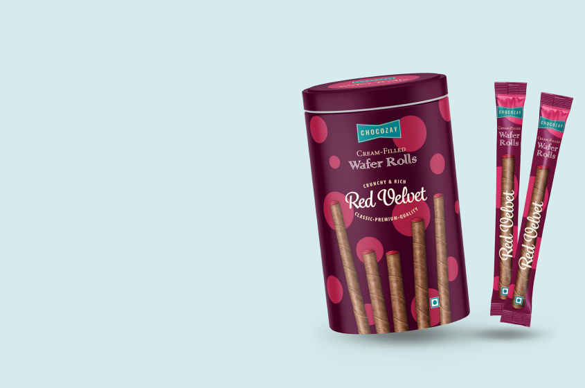

<div class="container m-auto my-5 py-2 flex">
    <div class="w-8/12 ">
        <owl-carousel-o [options]="customOptions">
            <ng-template carouselSlide>
                
            </ng-template> 
              <ng-template carouselSlide>
                
            </ng-template>
            <ng-template carouselSlide>
                
            </ng-template>
        </owl-carousel-o>
    </div>
    <div class="w-4/12">    
                     
                
    </div>
</div>
